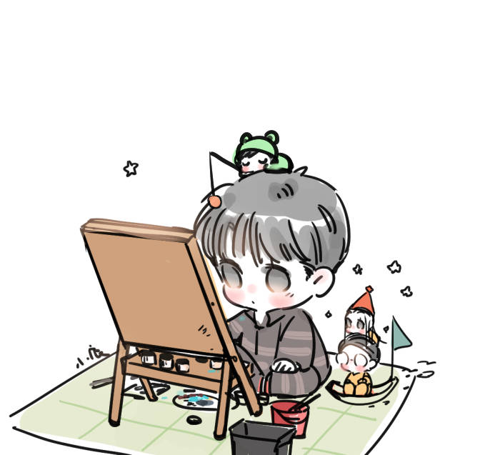
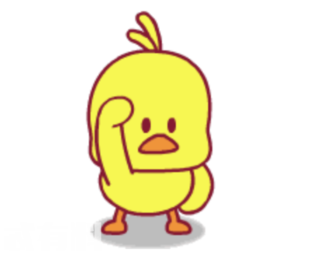
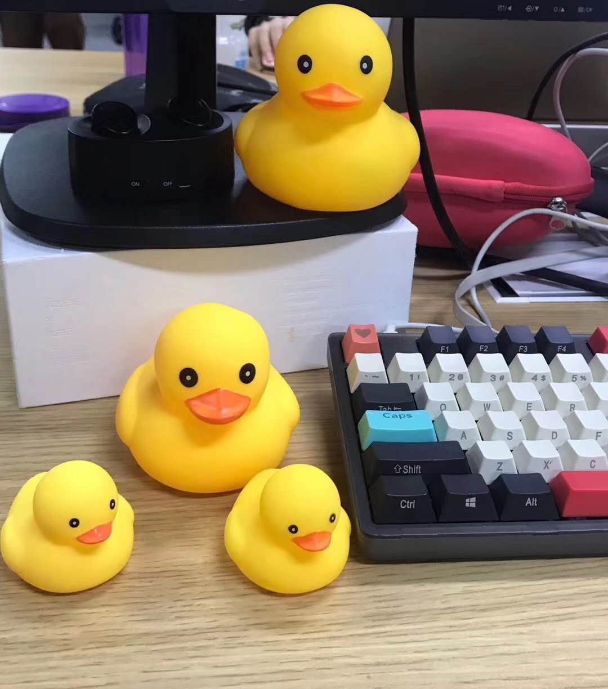

基本
信息
信息
| 姓 名： | 李霞 |
| 性 别： | 女 |
| 出生日期： | 1997.09.06 |
| 家 乡： | 云南玉溪 |
| 爱 好： | 羽毛球、听音乐 |
| 血 型： | A |
| 学 校： | 中南财经政法大学 |

我叫李霞，我来自云南玉溪，一个有“云烟之乡”、“花鼓之乡”、“聂耳之乡”之称的城市。
就读于中南财经政法大学信息管理与信息系统专业，现在大三。在三年的大学生活中，我逐渐爱上了编程，觉得编程语言是一个很神奇的东西，虽然自己学的不精，但很有兴趣去进一步的钻研。
当我敲下一行行代码，点击运行的时候，我看着自己能够输出hello world，能够实现一个简单的计算器功能，能够做出好看的网页，能够爬取网上的数据，能够实现数据可视化......心里面总会有一点激动。
常开玩笑说“编程五分钟，调试两小时”，当代码出现问题时确实会让人觉得不那么美好，但发现问题解决问题的过程有时又是紧张刺激的，代码的世界就是这么吸引我的。
作为一个码农，怎么能不知道github呢，当然我目前还主要是用来学习，自己的项目还很少，以后会持续更新。戳我直达我的github
想
说
的
话


tips
小黄鸭调试法
又称橡皮鸭调试法、黄鸭除虫法(Rubber Duck Debugging)
这是软件过程中使用的一种调试代码的方法，方法就是在程序的调试、除错或测试过程中，操作人耐心的向小黄鸭解释每一行程序的作用，以此来激发灵感与发现矛盾。
此概念是参照于一个传说，传说中程序大仙每日随身携带一只小黄鸭，在调试代码的时候会在桌上放这只小黄鸭，然后详细的向小黄鸭解释每一行代码。
你，有尝试过这个有趣的方法吗？